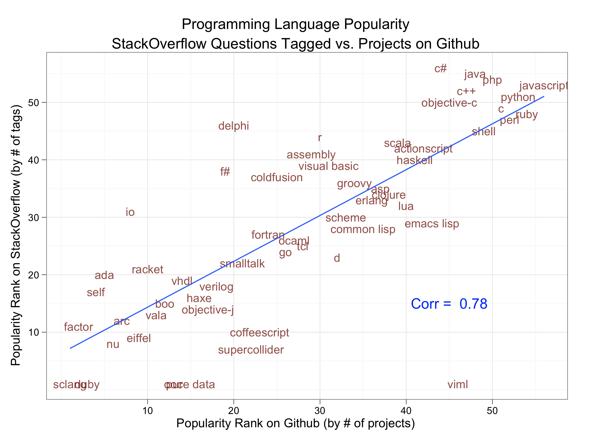

Big Data in Fashion:
with the OSS community
PyData 2013
"There is no rest for the fashionable. Every season designers have to struggle to come up with the new fabulous idea that everyone is going to love." --Johanna Blakley, TEDxUSC
Style is self-expression.
Lilypad Arduinos, Leah Buechley
About 2,080,000,000 results (0.18 seconds)
Big data in fashion is an underanalyzed field.
How can we understand fashion trends?
Python is not just the computer language.
Python is also a ginormous community.

Regular expressions

- basic string manipulation
Process Images

- opencv
- PIL
Analyze large datasets
- numpy
- scipy
- pandas
Create Visualizations
- matplotlib
- networkx
- geobase
Publish to the web
- web frameworks
What can you do to contribute?
Be the change you want to see.
Share what you're working on with others.
Tech Demo
Questions?
- Email: katychuang@acm.com
- Twitter: @katychuang
- Code: github.com/katychuang